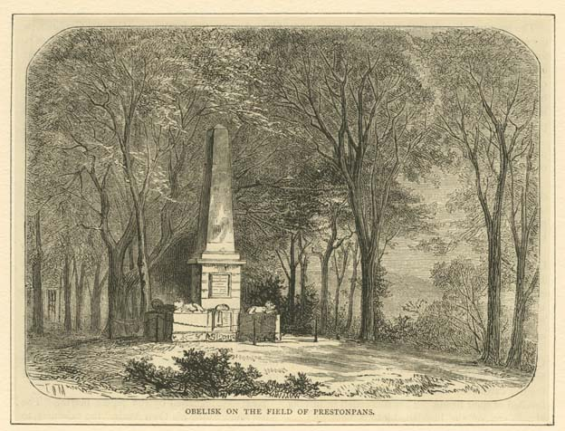
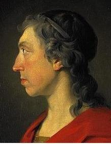
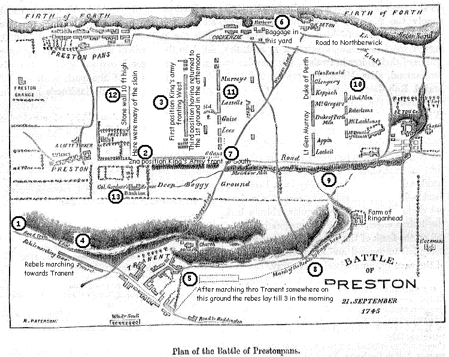

Ode to the Battle of Gladsmuir
(Battle of Prestonpans 21st September 1745)

Lyrics William Hamilton of Bangour (circa 1746)
Tune(Melody possibly composed by William McGibbon )
Source: James Johnson and Robert Burns "Scots Musical Museum"
Volume III N°202 -first published between 1787 and 1803
|
William Hamilton of Bangour
(1704 - 1754), celebrated for his translation of Homer. His one notable composition is the poem "Braes of Yarrow", written in 1724. He followed in 1745 Prince Charlie and wrote this very long "Ode to the Battle of Gladsmuir" (another name for the battle of Prestonpans).
It is probable that it was set to music by the Edinburgh musician, William McGibbon. At the age of twenty, Hamilton was a contributor to the 1st and 2d parts of Ramsay's "Tea-Table Miscellany", published in 1724. In 1745 he engaged in the Rebellion; but it does not appear that he bore arms in the Rebel army, where copies of his "Ode" were distributed. The sudden death of his wife prevented him from engaging more actively in the Rebellion. After Culloden he lurked for some time in the Highlands. He then escaped to France and continued an exile for three years, avoiding meddling in any of the intrigues of the Jacobites. However the internal evidence of the heading of the Soliloquy of Hamilton , as published in 1877 by the Rev. A.B. Grosart is clearly against this view. In 1749 he was enabled to return home and to get possession of the family property. He died at Lyons on the 25th March 1754. The present song was published under N° 202 in volume III of the "Scots Musical Museum" between 1787 and 1803 by James Johnson and Robert Burns. William Hamilton also composed a parody of Psalm 137 On Gallia's Shores . |
 William Hamilton of Bangour (1704 - 1754) By his cousin Gavin Hamilton |
William Hamilton de Bangour
(1704 - 1754), connu pour sa traduction d'Homère et célèbre pour un unique poème "Les landes de Yarrow", composé en 1724, suivit le Prince Charles en 1745. Il est en outre l'auteur de la présente interminable "Ode à la bataille de Gladsmuir" (un autre nom de la bataille de Prestonpans).
Il est probable que ce poème fut mis en musique par le compositeur édimbourgeois William McGibbon. A l'âge de vingt ans, Hamilton envoya des textes qui furent publiés en 1724 dans la "Tea-Table Miscellany", 1ère et 2ème partie. En 1745 il rejoignit la rébellion, mais il semble qu'il ne porta jamais les armes dans cette armée où fut diffusée son "Ode". La mort soudaine de sa femme l'empêcha de s'engager d'avantage. Après Culloden il se cacha un certain temps dans les Highlands. Puis il se réfugia en France où il vécut en exil pendant trois ans, restant à l'écart des intrigues Jacobites. En 1749 il put rentrer en Ecosse et récupérer les terres familiales. Il mourut à Lyon le 25 mars 1754. Toutefois le titre complet du Soliloque d'Hamilton , publié en 1877 par le Révérend A.B. Grosart contredit complètement cette thèse. Le présent chant fut publié sous le n°202 dans le volume III du "Musée Musical Ecossais" entre 1787 et 1803 par James Johnson et Robert Burns. William Hamilton est aussi l'auteur d'une parodie du Psaume 136 Sur les rives de la Gaule . |

|
1. As over Gladsmuir's blood stained field,
Scotia, Imperial Goddess flew; Her lifted spear and radiant shield Conspicuous, blazing to the view. Her visage lately clouded with despair, Now reassumed its first majestic air. 2. Such seen, as oft in battle warm, She glowed through many a martial age; Or mild to breathe the civil charm, In pious plans and counsel sage: For o'er the mingling glories of her face, A manly greatness heightened female grace. 3. Loud as the trumpet rolls its sound, Her voice the Power celestial raised, While her victorious sons around In silent joy and wonder gazed. The sacred muses heard th' immortal lay, And thus to earth the notes of fame convey: 4. "Tis done, my sons! 'Tis nobly done! Victorious over tyrant power: How quick the race of fame was run! The work of ages in one hour'. Slow creeps th' oppressive weight of slavish reigns, One glorious moment rose, and burst your chains. 5. "But late, forlorn, dejected, pale, A prey to each insulting foe, I sought the grove and gloomy vale, To vent in solitude my woe. Now to my hand the balance fair restored, Once more I wield on high th' imperial sword. 6. «What arm has this deliverance wrought? Tis he! The gallant youth appears! warm in fields, and cool in thought, Beyond the slow advance of years. Haste, let me, rescued now from future harms, Strain close thy filial virtue in my arms. 7. "Early I nursed this royal youth, Ah ! ill detained on foreign shores; 1 formed his mind with love of truth, With fortitude and wisdom's stores; For when a noble action is decreed, Heaven forms the hero for the destined deed. 8. "Nor could the soft seducing charms Of mild Hesperia's (*) blooming soil E'er quench his noble thirst for arms, Of generous deeds, and honest toil. Fired with the love a country's love imparts, He fled their weakness, but admired their arts. 9. “With him I ploughed the stormy main, My breath inspired th' auspicious gale: Reserved for Gladsmuir's glorious plain, Through dangers winged his daring sail; Where, firmed with inborn worth, he durst oppose His single valour to a host of foes. 10. "He came, he spoke, and all around As swift as heaven's quick-darted flame, Shepherds turned warriors at the sound, And every bosom beat for fame: They caught heroic ardour from his eyes, And at his side the willing heroes rise… 11. “Rouse, England, rouse! Fame's noblest son, In all thy ancient splendour shine! If I the glorious work began, 0 let the crowning palm be thine! I bring a prince, for such is heaven's decree, Who overcomes but to forgive and free. 12. “So shall fierce wars and tumults cease, While plenty crowns the smiling plain; And industry, fair child of peace, Shall in each crowded city reign: So shall these happy realms forever prove, The sweets of union, liberty, and love." (*) =Italy |
1. Quand sur Gladsmuir ensanglanté
L'Ecosse prenait son essor, A la vue de tous flamboyaient La lance dressée, l'écu d'or. Ses traits que l'espoir désertait Avaient recouvré leur splendeur. 2. Dans de mémorables batailles Souvent son glaive avait brillé. Des joyaux aussi beaux émaillent Ses pieux exploits en temps de paix La gloire mêle en toi, Déesse, La grâce à la mâle grandeur! 3. Lorsque résonne la trompette, La Céleste entonne son chant. Et l'on voit, pleins d'une joie muette, S'étonner ses glorieux enfants. Et dans cet immortel péan La Renommée parle à leurs coeurs: 4. « Nobles fils, de vous je suis fière, Mes fils victorieux des tyrans, Vous parcourûtes la carrière Des âges en si peu d'instants, Secouant le joug de l’esclavage Brisant vos fers au champ d’honneur! 5. Naguère, sans espoir, livide, En butte aux lazzis des gredins, Je hantais les bois, les lieux vides De vie, pour clamer mon chagrin. Mais le fléau de la balance, Un bras l’a redressé, sans peur. 6. Quel bras accomplit ces merveilles? C’est le tien, jeune homme, debout! Ardent guerrier aux sages veilles, Plus mûr que ton âge avant tout, Viens donc, qu’entre mes bras j’étreigne, Délivrée, mon libérateur! 7. J’ai bercé ta royale enfance Quand on te retenait au loin. Et ton esprit, avec patience, Je l’ai forgé semblable au mien: Le Ciel veut qu’une main parfaite Accomplisse ses grands desseins. 8. Car les charmes qu’en abondance Offre la terre d’Hespérie, (*) Tout séduisants qu’ils soient, n’étanchent Pas ta soif de remplir ta vie De hauts faits et glorieuses peines Dans l’intérêt de ta patrie. 9. Avec toi je bravai les ondes Et mon souffle inspira le vent, Qu'en vue de Gladsmuir il seconde Ce marin que la Gloire attend, Dont la seule valeur innée Défie la horde des méchants. 10. Tu viens, parles: l’Ecosse entière Se dresse pour toi, dans l’instant. Les bergers s’arment pour la guerre, Enthousiastes, le cœur battant. Tes yeux de leur ardeur enflamment Ceux qui veulent suivre tes pas… 11. Albion, fille de la gloire, Revêts ton antique splendeur! J’ai renoué le fil de l’Histoire. A toi la palme du vainqueur. L’arrêt du Ciel voulait un prince Magnanime et libérateur. 12. Que cessent tumultes et guerres! L’abondance règne en tous lieux! Qu’avec la concorde prospèrent Les bourgs les plus industieux! Qu’à jamais unis ces royaumes Libres vivent dans le bonheur! (*) =Italie |
|
The Battle of Prestonpans: 21st September 1745
The figures point at the map below On the 18h of September 1745, Charles who was in Edinburgh, heard that John Cope had disembarked at Dunbar. He immediately proceeded to Duddingston where his army encamped and a council of war decided to follow Keppoch 's advice -who had served in the French army and knew best what was to do against regular troops- and to attack the Hanoverians at the crack of dawn on 21st September with forces that were in the meantime increased to amount over 2,400 men. The Highlanders hastened to occupy the high ground to the south and descended in the direction of Tranent where they were received by the Hanoverian troops with a shout of defiance. (1) About two o'clock in the afternoon, they halted on the Birsley Brae to the west of Tranent and formed in order of battle. (2) Cope who had expected them to come from the West, changed his front to the South. On his right was the east wall of a park, extending from north to south and the village of Preston Pans. The village of Seaton was on his left, and the village of Cockenzie and the sea in his rear. Almost immediately in front was a deep ditch filled with water, and a strong and thick hedge. Between the two armies was a morass. On the more firm ground at the ends were several small enclosures. Lord George Murray sent an officer to examine the ground of the morass. The latter after finishing his perilous duty reported that it was impossible to attack in front without risking the whole army and for the men to pass the ditches in a line. (3) Cope returned to his original position when he saw part of Charles' army moving to his right. Murray, considering now that the only mode of attacking Cope was by advancing from the east, led part of the army about sunset through Tranent and sent notice to the Prince to follow him as quickly as possible. Fifty Camerons who had been exposed during the afternoon to the fire of Cope's artillery in the churchyard of Tranent joined him. (4) Charles proceeded to follow them but left behind the Athole brigade , consisting of 500 men under Lord Nairne , which he posted near Preston above Colonel Gardiner's parks. (5) After the Highland army had halted on the fields to the east of Tranent, a council of war was held, at which Lord George Murray proposed to attack the enemy at break of day , as there was a small defile at the east end of the ditches and if once passed there would be no farther hindrance to commence the attack. A few piquets were placed around the bivouacs, and the Highlanders, after having supped, wrapped themselves up in their plaids, and lay down upon the ground to repose for the night. Notice was sent to the Athole brigade to leave their post at two o'clock in the morning as quietly as possible. To conceal their position from the English general, no fires or lights were allowed, and orders were issued and scrupulously obeyed, that strict silence should be kept When Cope observed Charles returning towards Tranent, he resumed his former position (3) with his front to the west and his right to the sea, so that he had spent the whole day doing absolutely nothing, changing his position at every movement of his enemy . He placed piquets of horse and foot along the morass nearly as far east as Seaton (6) and had his baggage and military chest sent to Cockenzie under a guard of 55 men. His forces amounted to 2,300 men: He drew up his foot in one line, in the centre of which were eight companies of Lacelles's regiment, and two of Guise's. On the right were five companies of Lee's regiment, and on the left the regiment of Murray, with a number of recruits for different regiments at home and abroad. Two squadrons of Gardiner's dragoons formed the right wing, and a similar number of Hamilton 's composed the left. The remaining squadron of each regiment was placed in the rear of its companions as a reserve. (7) On the left of the army, near the wagon-road from Tranent to Cockenzie, were placed the artillery, consisting of six pieces of cannon under Lieutenant-colonel Whiteford, and guarded by a company of Lee's regiment, commanded by Captain Cochrane. Besides the regular troops there were some volunteers from the neighbouring tenantry, headed by their respective landlords. After Nairne had reached the main body, the order of march of the Highland army was reversed and before four o'clock it was in full march, led by the Duke of Perth who was to command the right wing, preceded by a party of 60 men under the command of Macdonald of Glenalladale , major of the regiment of Clanranald , whose appointed duty it was to seize the enemy's baggage. . (8) The army proceeded in an easterly direction till near the farm of Ringanhead, when, turning to the left, they marched in a northerly direction through a small valley which intersects the farm. During the march the utmost silence was observed by the men. (9) The path across the morass was so narrow that the column, which marched three men abreast, had scarcely sufficient standing room. The path in question led to a small wooden bridge which had been thrown over the large ditch that ran through the morass from east to west. From a supposition that the mash was not passable in that quarter, Cope had placed no guards in that direction, and the Highland army, whose march across could have been stopped by a handful of men, passed the bridge and cleared the marsh without interruption. The army was divided into two lines with an interval between them. After the first line had got out of the marsh, the second followed, conducted by the prince in person. At the remote end of the marsh there was a deep ditch, three of four feet broad, over which the men had to leap. In jumping across this ditch, Charles fell upon his knees on the other side, and was immediately raised by an officer who said, that Charles looked as if he considered the accident a bad omen. (10) It was not in compliance with any rule in military science, that the order of march of the Highland army had been reversed; but in accordance with an established punctilio among the clans, which, for upwards of seven centuries, (Bannockburn) had assigned the right wing , regarded as the post of honour, to the Macdonalds . The army was drawn up in two lines. The first consisted of the regiments of Clanraland, Keppoch, Glengary, and Glencoe, under their respective chiefs. These regiments formed the right wing, which was commanded by the Duke of Perth . The Duke of Perth's men and the Macgregors composed the centre; while the left wing, commanded by Lord George Murray , was formed of the Camerons under Lochiel , their chief, and the Stewarts of Appin commanded by Stewart of Ardshiel . The second line, which was to serve as a reserve, consisted of the Athole-men , the Robertsons of Strowan , and the Maclauchlans . This body was placed under the command of Lord Nairne . (11) As soon as Cope received intelligence of the advance of the Highlanders, he gave orders to change his front to the east . This new change caused great confusion, some men being unable to find out the regiments to which they belonged and preventing others from forming properly. For want of room the squadron under Colonel Gardiner drew up behind that commanded by Lieutenant-colonel Whitney . The artillery, which before the change had been on the left, and close to that wing, was now on the right somewhat farther from the line, and in front of Whitney's squadron. After both lines of the Highland army had formed, Charles addressed his army in these words:- "Follow me, gentlemen; and by the assistance of God I will, this day, make you a free and happy people" . Every thing being now in readiness for advancing, the Highlanders took off their bonnets, and placing themselves in an attitude of devotion, with upraised eyes uttered a short prayer (see picture ). Lord George Murray now ordered the left wing to advance, and sent an aide-de-camp to the Duke of Perth to request him to put the right in motion. By inclining to the left, the Camerons were first brought up directly opposite to Cope's cannon . To check the advance of the Highlanders, Colonel Whiteford fired off five of the field pieces with his own hand; but though their left seemed to recoil, they instantly resumed the rapid pace they had set out with. The artillery guard next fired a volley with as little effect. Observing the squadron of dragoons under Lieutenant-Colonel Whitney advancing to charge them, the Camerons set up a loud shout, rushed past the cannon, and after discharging a few shots at the dragoons, which killed several men, and wounded the lieutenant-colonel, flew upon them sword in hand. When assailed, the squadron was reeling to and from the fire; and the Highlanders following an order they had received, to strike at the noses of the horses without minding the riders, completed the disorder. In a moment the dragoons wheeled about, rode over the artillery guard, and fled followed by the guard. The Highlanders continuing to push forward without stopping to take prisoners, Colonel Gardiner was ordered to advance with his squadron, and charge the enemy. He accordingly went forward, encouraging his men to stand firm; but this squadron, before it had advanced many paces, experienced such a reception, that it followed the example which the other had just set. After the flight of the dragoons, the Highlanders advanced upon the infantry, who opened a fire from right to left, which went down the line as far as Murray's regiment. They received this volley with a loud huzza, and throwing away their muskets, drew their swords and rushed upon the foot before the latter had time to reload their pieces. Confounded by the flight of the dragoons, and the furious onset of the Highlanders, the astonished infantry threw down their arms and took to their heels. Hamilton's dragoons, who were stationed on Cope's left, displayed even greater pusillanimity. Murray's regiment being thus left alone on the field, fired upon the Macdonalds who were advancing, and also fled. Thus, within a very few minutes after the action had commenced, the whole army of Cope was put to flight. Such were the impetuosity and rapidity with which the first line of the Highlanders broke through Cope's ranks, that they left numbers of his men in their rear who attempted to rally behind them; but on seeing the second line coming up they endeavoured to make their escape. (12) Unfortunately for Cope's infantry, the walls of the enclosures about the village of Preston now that these were in their rear, operated as a barrier to their flight. Since they had thrown off their arms to facilitate their escape, they had deprived themselves of their only means of defence, and driven as they were upon the walls of the inclosure, they would have all perished, had not Charles and his officers strenuously exerted themselves to preserve the lives of their foes. Macgregor, son of the celebrated Rob Roy , fell at the commencement of the action. When advancing to the charge he received five wounds. That his men might not be discouraged by his fall, this intrepid officer called out to them, "My lads, I am not dead! - by God, I shall see if any of you does not do his duty!". This singular address had the desired effect, and the Macgregors instantly fell on the flank of the English infantry, which, being left uncovered by the flight of the cavalry, immediately gave way. From the Hanoverian army, between 1,600 and 1,700 prisoners, foot and cavalry, fell into the hands of the Highlanders, including about 70 officers and the baggage-guard of 300 men stationed at Cockenzie who surrendered to the Camerons. The cannon and all the baggage, together with the military chest, containing £4,000, fell into the hands of the victors. (13) The greater part of the dragoons escaped by the two roads at the extremities of the park wall, one of which passed by Colonel Gardiner's house in the rear on their right, and the other on their left, to the north of Preston-house. Cope collected about 450 of the panic-struck dragoons on the west side of the village of Preston, and attempted, without success, to lead them back to the charge. The general had no alternative but to gallop off with his men. He reached Coldstream, a town about forty miles from the field of battle, that night; and entered Berwick next day. Among six of Cope's officers who were killed, was Colonel Gardiner . Captain Brymer of Lee's regiment met a similar fate. The loss on the side of the Highlanders was trifling. Four officers, and between 30 and 40 privates, were killed; and 5 or 6 officers, and between 70 and 80 privates, wounded. When the action was over, the Highlanders displayed an unwonted sympathy for the wounded . They had a good example in Charles himself, who not only issued orders for taking care of the wounded, but also remained on the field of battle till mid-day to see that his orders were fulfilled. He despatched one of his officers to Edinburgh to bring out all the surgeons, who accordingly instantly repaired to the field of battle to meet the demands of the wounded. On the evening of Sunday the 22d of September, the day after the battle of Preston, Charles returned to Holyrood House, and was received by a large concourse of the inhabitants, who had assembled round the palace, with the loudest proclamation. But Charles, considering that it was British blood that had been spilt, was unwilling that the victory should be celebrated by any public manifestations and prohibited "any outward demonstration of public joy" . The news of this victory was hailed by the Jacobite with unbounded delight and many persons who were formerly in favour of the government openly declared themselves converts in favour of the Stuarts, especially among women and as the Lord President Forbes states: "All the fine ladies... became passionately fond of the young Adventurer, and used all their arts and industry for him in the most intemperate manner". In England the news of the prince's victory created a panic and all Scotsmen looked on as traitors or secrete Jacobites. With the exception of the castles of Edinburgh and Stirling, and a few insignificant forts, the whole of Scotland may be said to have been now in possession of the victor. Having no longer an enemy to combat in North Britain, Charles turned his eyes to England. But against the design which he appears to have contemplated, of an immediate march into that kingdom, several very serious objections occurred. The greater part of his advisers thought the army too small for such an undertaking. These urged that it was prudent to wait for the aid of new supporters engaged by this first success, - that French succours might now be depended upon, since the prince had given convincing proofs of his having a party in Scotland, - that, at any rate, it was better to remain some little time at Edinburgh, as in the mean time the army would be getting stronger by expected reinforcements and would be better modelled and accoutred. This opinion prevailed, and Charles resolved to make some stay in Edinburgh. It is difficult to decide if it was a wise decision. Source: ElectricScotland.com |
La bataille de Prestonpans: 21 septembre 1745
Les chiffres renvoient à la carte ci-dessous le 18 septembre 1745, Charles qui était à Edimbourg apprit que John Cope avait débarqué à Dunbar. Il se rendit aussitôt à Duddingston où campait son armée et il tint un conseil de guerre qui décida de se ranger à l'avis de Keppoch -qui, ayant servi dans l'armée française, était le plus au fait de la conduite à tenir face à une armée régulière- et d'attaquer les Hanovriens à l'aube du 21 septembre avec des effectifs qui s'élevaient maintenant à plus de 2.400 hommes. Les Highlanders se hâtèrent d'occuper le plateau du sud et se dirigèrent pour cela vers Tranent où ils furent accueillis par les cris de provocations de l'ennemi. (1) Vers deux heures de l'après-midi, ils firent halte sur le Birsley Brae à l'ouest de Tranent et se mirent en ordre de bataille. (2) Cope qui s'attendait à les voir venir de l'ouest changea sa position pour faire front au sud. Sur sa droite, le mur de clôture d'une propriété, orienté du nord au sud et le village de Preston Pans; sur sa gauche, le village de Seaton; derrière lui le village de Cockenzie et la mer. Presque immédiatement devant lui il y avait un fossé profond rempli d'eau et une épaisse et solide haie. Entre les deux armées s'étendait un marais avec, aux extrémités au sol plus ferme, quelques petites propriétés clôturées. George Murray envoya un officier pour sonder le marais. Ce dernier, lorsqu'il eut accompli cette mission périlleuse, rapporta qu'il était impossible d'attaquer de front sans faire courir un risque à l'armée entière qui aurait à se mettre sur une file pour franchir les fossés. (3) Cope reprit sa position initiale quand il vit une partie de l'armée conduite par Charles faire mouvement sur sa droite. Lord George Murray, considérant que la seule façon d'attaquer Cope était de venir de l'est, fit traverser Tranent à une partie de l'armée, à la tombée de la nuit et fit demander au Prince de le rejoindre dès que possible. Cinquante Cameron qui avaient été exposés au feu de l'artillerie de Cope toute l'après-midi au cimetière de Tranent suivirent le mouvement. (4) Charles se mit en marche, laissant toutefois derrière lui la brigade d'Atholl de 500 hommes commandés par Lord Nairne qu'il posta près de Preston, au dessus de la propriété du Colonel Gardiner. (5) Après que l'armée des Highlands eut fait halte dans les champs à l'est de Tranent, un conseil de guerre se tint au cours duquel Lord George Murray proposa d'attaquer le lendemain, à l'aube , en passant par un petit défilé à l'extrémité est des fossés, sachant qu'une fois ceux-ci franchis, il n'y avait plus d'obstacle au lancement d'une attaque. Quelques piquets furent placés autour du bivouac et les Highlanders, après avoir dîné, s'enveloppèrent dans leurs plaids et s'étendirent sur le sol pour dormir. On envoya dire à la Brigade d'Atholl d'abandonner leur faction à deux heures du matin en faisant le moins de bruit possible. Pour cacher les positions aux généraux anglais, les faux et chandelles furent interdits et consigne fut donnée d'observer un silence absolu. Lorsque Cope s'aperçut que Charles se dirigeait vers Tranent, il reprit sa position primitive (3) faisant front à l'ouest et ayant la mer à sa droite, si bien qu'il avait perdu toute une journée en inutiles manoeuvres répondant aux mouvements observés chez l'ennemi . Il plaça des piquets de cavaliers et de fantassins le long du marais jusqu'à Seaton, (6) et fit transporter ses bagages et sa cassette militaire à Cockezie avec une garde de 55 hommes. Ses forces étaient de 2.300 hommes. Il déploya son infanterie sur une ligne avec, au centre, 8 compagnies du régiment de Lacelle et 2 de celui de Guise; à droite, 5 compagnies du régiment de Lee et à gauche, le régiment de Murray renforcé d'un certain nombre de recrues issues de différents régiments nationaux et étrangers. Deux escadrons de dragons commandés par Gardiner formaient l'aile droite et deux autres, commandés par Hamilton composaient l'aile gauche. (7) Sur la gauche de l'armée, près de la voie carrossable allant de Tranent à Cockenzie était disposée une batterie de 6 canons commandée par le Lieutenant-Colonel Whiteford et protégée par une compagnie du régiment de Lee défendue par le capitaine Cochrane. Outre les troupes régulières, il y avait quelques volontaires provenant des métairies voisines et commandées par leurs propriétaires respectifs. Une fois que Nairne eut rejoint le gros des troupes, l'ordre de départ de l'armée des Highlands fut inversé et peu avant 4 heures du matin tout le monde était en marche, sous le commandement du Duc de Perth , sachant qu'il aurait à tenir l'aile droite, lui-même précédé d'un groupe de 60 hommes ayant à leur tête McDonald de Glenalladale , major du régiment de Clanranald , chargé de s'emparer les bagages de l'ennemi. (8) L'armée se dirigea vers l'est jusqu'à proximité de la ferme de Ringanhead où elle reprit vers la gauche pour se diriger vers le nord dans un étroit ravin qui traverse la pièce de terre. Pendant cette marche, on observa le silence absolu. (9) Le sentier à travers le marais était si étroit que la colonne de trois hommes marchant de front avait à peine de quoi tenir debout. Ce sentier menait à un petit pont de bois qu'on avait jeté au dessus du large fossé qui drainait le marais d'est en ouest. Supposant que le bourbier était infranchissable dans ce secteur, Cope n'avait pas placé de garde dans cette direction et l'armée des Highlands, qu'une poignée d'hommes aurait suffi à arrêter, passa le pont et dégagea le marais sans être inquiétée. L'armée était divisée en deux lignes séparées par un intervalle. Une fois que le première ligne eut quitté le marais, la seconde arriva à son tour commandée par le Prince lui-même. A l'extrémité du marais, il y avait un fossé profond et large de deux ou trois pieds au dessus duquel il fallait sauter. Ce faisant, Charles, tomba à genoux de l'autre côté et l'officier qui l'aida aussitôt à se relever, rapporta que sa mine effrayée montrait qu'il voyait là un mauvais présage. (10) Ce n'était pas en vertu de la théorie militaire que l'ordre de départ de l'armée des Highlands avait été inversé, mais pour satisfaire à la préséance en usage dans les clans qui voulait depuis 7 siècle -depuis Bannockburn, exactement- que l' aile droite , considérée comme une position honorifique soit réservée au Clan Donald . L'armée fut disposée sur deux lignes: La première comprenait les régiments de Clanranald, Keppoch, Glengarry et Glencoe commandés par leurs chefs respectifs. Ces régiments formaient l'aile droite, commandée par le Duc de Perth . Les hommes du Duc de Perth et les McGregor composaient le centre, tandis que l'aile gauche commandée par Lord George Murray était constituée des Cameron sous les ordres de Lochiel leur chef et des Stewart d'Appin commandés par Stewart of Ardshiel . La seconde ligne destinée à composer la réserve, regroupait le régiment d' Atholl , les Robertson de Strowan et les McLachlan , placés sous le commandement de Lord Nairne . (11) Dès que Cope fut informé que les Highlanders faisaient mouvement, il ordonna à son armée en faisant front vers l'est cette fois . Ce nouveau changement fut source de grande confusion, beaucoup ne sachant plus où était leur régiment et empêchant les autres troupes de manoeuvrer correctement. Par manque de place, l'escadron commandé par le colonel Gardiner dut se placer derrière celui commandé par le lieutenant-colonel Whitney . L'artillerie, qui se tenait à gauche et tout près du front, dont elle formait l'extrémité initialement, était maintenant à droite, un peu plus éloignée de lui, mais devant l'escadron de Whitney. Après que les deux lignes de l'armée des Highlands furent mises en place, Charles s'adressa à son armée en ces termes: "Suivez-moi, Messieurs, et avec l'aide de Dieu, je ferai de vous aujourd'hui, un peuple libre et heureux!" Tout étant prêt pour passer à l'attaque, les Highlanders se découvrirent et prenant une attitude recueillie récitèrent une courte prière, les yeux levés vers le ciel (cf gravure ). Lord George Murray ordonna à l'aile gauche d'avancer et envoya son aide de camp dire au Duc de Perth d'en faire de même à droite. En infléchissant leur mouvement à gauche, les Cameron se retrouvèrent juste devant les canons ennemis . Pour entraver leur avance, le colonel Whiteford fit feu avec sa batterie qu'il servait lui même. Mais au lieu de reculer, comme il sembla d'abord, l'aile gauche reprit sa marche de plus belle. La garde de l'artillerie fit feu à son tour, avec aussi peu de succès. Voyant l'escadron de dragons du Lieutenant-colonel Whitney avancer pour les charger, les Cameron, en poussant des cris affreux, se ruèrent sur les canons qu'ils dépassèrent, puis, après avoir déchargé leurs armes à feu sur les dragons, tuant plusieurs d'entre eux, et blessant leur lieutenant-colonel, se jetèrent sur eux sabre au clair. ils assaillirent l'escadron qui reculait et avançait pour échapper à la fusillade. Et les Highlanders, suivant l'ordre reçu de frapper les chevaux aux naseaux sans se préoccuper des cavaliers, portèrent la confusion à son comble. Au bout d'un moment les dragons firent demi-tour et, piétinant la garde de l'artillerie, prirent la fuite, imités par ladite garde. Les Highlanders continuaient d'avancer, sans arrêter de faire des prisonniers. Aussi l'escadron du Colonel Gardiner reçut l'ordre d'avancer et de charger l'ennemi. Gardiner se porta au devant de ses hommes, les exhortant au courage. Mais son escadron avant même d'avoir fait quelques pas fut accueilli de manière telle qu'il préféra suivre l'exemple de l'escadron précédent. Une fois la cavalerie mise en fuite, les Highlanders se tournèrent vers l'infanterie, qui ouvrit le feu de la droite vers la gauche, depuis le régiment de Lee à celui de Murray. Les Highlanders accueillirent cette salve avec des hourras sonores et, abandonnant leurs mousquets, dégainèrent leurs sabres et se jetèrent sur les fantassins ennemis avant que ceux-ci aient eu le temps de recharger leurs armes. Abasourdis par la fuite de leur cavalerie et par la fureur de l'assaut ennemi, l'infanterie étonnée, jeta ses armes et prit la fuite. Les dragons de Hamilton qui tenaient l'aile gauche de l'armée de Cope s'avérèrent encore pus peureux. Le régiment de Murray resté seul sur le champ de bataille fit feu sur les McDonald, mais comme ceux-ci continuaient d'avancer sur eux, ils prirent la fuite, eux aussi. L'impétuosité et la rapidité avec laquelle la première ligne des Highlanders perça les rangs de Cope furent telles, qu'ils laissèrent derrière eux bon nombre d'ennemis qui essayèrent de se regrouper, mais quand ils virent fondre sur eux la deuxième ligne de Highlanders, ils cherchèrent le salut dans la fuite. (12) Malheureusement pour l'infanterie de Cope, les murs des terrains clos entourant le village de Preston, maintenant qu'ils étaient derrière elle, constituaient un obstacle à leur fuite. Comme ils avaient jeté leurs armes pour fuir plus vite, ils s'étaient privés eux-mêmes de tout moyen de défense. Acculés comme ils l'étaient à ces murs, ils auraient tous péri, n'eût été l'intervention énergique de Charles et de ses officiers pour préserver les vies ennemies. McGregor, fils du célèbre Rob Roy tomba dès le commencement de l'action. Alors qu'il avançait au pas de charge, il reçut cinq blessures. Pour que ses hommes ne soient pas démoralisés par la mort de leur chef, cet officier intrépide leur cria: "Mes enfants, je ne suis pas morts! - Par Dieu, je vais surveiller chacun d'entre vous et gare à celui qui faillira à son devoir!" . Ce discours singulier et l'effet recherché et les McGregor s'abattirent sur le flanc de l'infanterie ennemie, lequel n'état plus protégé par la cavalerie fut aussitôt enfoncé. Du côté des Hanovriens, c'est de 1.600 à 1.700 prisonniers des deux armes qui tombèrent aux mains de Highlanders, y compris environ 70 officiers et la garde des bagages de 300 hommes stationnée à Cockenzie qui se rendirent aux Cameron. Les canons et tout les bagages y compris le trésor de guerre de 4.000 £ tombèrent aux mains des vainqueurs. (13) La plupart des dragons s'échappèrent par les deux routes passant aux extrémités du mur d'enceinte du parc, dont l'un traversait près de la maison de Gardiner, derrière eux, à droite et l'autre sur leur gauche au nord de Preston House. Cope réunit environ 450 des dragons pris de panique à l'ouest du village de Preston et essaya, mais en vain, de les ramener au combat. Il ne lui restait plus qu'à galoper à leur suite pour s'enfuir. Il parvint à Coldstream, un bourg à environ 40 miles du champ de bataille, dans la nuit et à Berwick le lendemain. Parmi les six officiers de Cope qui furent tués, il y avait le colonel Gardiner . Le capitaine Brymer du régiment de Lee connut un sort semblable. Les pertes du côté des Highlanders furent insignifiantes. Quatre officiers et de 30 à 40 soldats furent tués; 5 à 6 officiers et 70 à 80 soldats furent blessés. Lorsque la bataille fut terminée, les Highlanders montrèrent envers les blessés une compassion inhabituelle. Charles lui-même donnait l'exemple, qui ne se contentait pas de donner des ordres pour qu'on prenne soin des blessés, mais qui resta sur le champ de bataille jusqu'à midi pour s'assurer que ses ordres étaient bien exécutés. Il envoya quérir à Edimbourg tous les chirurgiens qui eurent à se présenter immédiatement sur le champ de bataille pour donner les soins requis par l'aide aux blessés. Dans la soirée du dimanche, 22 septembre, lendemain de la bataille de Preston, Charles retourna à Holyrood House et fut reçu par la foule assemblée sur le parvis du château au milieu des acclamations. Mais Charles, considérant que c'était le sang britannique qui avait coulé, ne voulut pas que cette victoire soit saluée par aucune manifestation publique et interdit " toute démonstration de réjouissance publique". La nouvelle de cette victoire fut saluée par les Jacobites avec un plaisir sans borne et plus d'un qui était jusqu'ici favorable au gouvernement, se déclara désormais partisan des Stuarts, en particulier les femmes . Comme le Lord Président Forbes le note: "Toutes les belles dames... s'éprirent d'une folle passion pour le jeune aventurier et mirent à son service tous leurs artifices et toute leur énergie sans retenue aucune." En Angleterre, la nouvelle de la victoire du Prince provoqua la panique et tous les Ecossais furent regardés comme des traîtres ou des crypto-Jacobites. A l'exception des châteaux d'Edimbourg et de Stirling et de quelques forts sans importance, toute l'Ecosse était aux mains des vainqueurs. N'ayant plus d'ennemi à combattre en Ecosse, Charles tournait maintenant son regard vers l'Angleterre. Mais le dessein qu'il semble avoir caressé, de marcher sans attendre sur ce royaume, était contrecarré par de nombreuses et graves considérations. La plupart de ses conseillers considéraient que son armée n'avait pas la taille requise pour une telle entreprise. La prudence exigeait, disaient-ils, d'attendre l'aide de nouveaux partisans encouragés par ce premier succès. Les secours français arriveraient certainement, maintenant que le Prince avait apporté la preuve suffisante du soutien dont il jouissait en Ecosse. En tout état de cause, il valait mieux demeurer un peu à Edimbourg, le temps que l'armée complète ses effectifs avec des renforts attendus et qu'on puisse parfaire son instruction et son équipement. Charles finit par se rendre à cet avis et resta donc quelque temps à Edimbourg. Difficile de dire s'il prit alors la bonne décision. Source: ElectricScotland.com |
